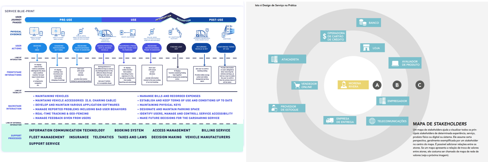

Germinar (Necessidades)
Nesta fase, conforme a ideia do serviço começa a ganhar forma, é importante validar o problema e as necessidades com os cidadãos e as organizações, confirmando o escopo do serviço.
Objetivo
Refinar e validar o problema e as necessidades dos cidadãos e das organizações, garantindo o alinhamento com o ODS (Objetivos de Desenvolvimento Sustentável).
O objetivo nesta fase é refinar os conceitos e garantir que o serviço seja capaz de atender às necessidades identificadas e contribuir diretamente para os ODS.
- Alinhamento com os ODS
- Refinamento do escopo do serviço
- Validação com usuários por meio de protótipos e feedback
Input
Durante a fase Germinar, é essencial trabalhar com uma série de inputs que ajudarão a moldar o serviço, permitindo o ajuste fino necessário para que ele atenda às necessidades dos usuários:
- Estratégia Digital da organização
- Draft do projeto (ACT...)
- Canvas do escopo
Participantes
Nesta fase, diferentes grupos de interessados participam para garantir que o serviço está alinhado com as necessidades dos usuários e da organização.
- Donos do serviço
- Time de TI
- Usuários finais do serviço
- Entre outros.
Técnicas e Ferramentas para Execução
| Técnica | Descrição |
|---|---|
| Design baseado em cenários | Auxilia na simulação de diferentes soluções para determinar o impacto e viabilidade do serviço. |
| Blueprint do Serviço | Representa o fluxo de serviço, interações e pontos de contato entre stakeholders e usuários. |
| Mapa de Stakeholders | Visualiza a relação e influência de todos os stakeholders envolvidos no serviço. |
| Mapa de Ecossistema | Representa visualmente os atores e as trocas de valor no sistema onde o serviço está inserido. |
| E, Não é, Faz, Não Faz | Técnica que ajuda a definir o que o serviço é e o que ele não é, o que faz e o que não faz. |
| Enunciado do Problema | Define o problema principal que o serviço busca resolver. |
| Colcha de Retalhos | Coleta de diferentes ideias ou insights fragmentados que juntos contribuem para a solução. |
| Mapeamento de Necessidades | Ferramenta para organizar e priorizar as necessidades dos usuários e da organização. |

Output
- Canvas de Necessidades (Conceito do serviço refinado com mapeamento de lacunas e melhorias resultantes das interações com os usuários)
Como resultado, é gerado o Canvas Germinar, contendo o refinamento das informações preliminarmente definidas na fase Semear:
- O que é o serviço
- Para quem este serviço será criado.
Considerações Gerais
Na fase denominada Germinar, o foco é confirmar as necessidades e refinar o conceito de serviço a partir da interação com os usuários. São realizadas oficinas de Design Thinking, nas quais se criam personas e jornadas, além de protótipos de baixa fidelidade para coleta de feedback.